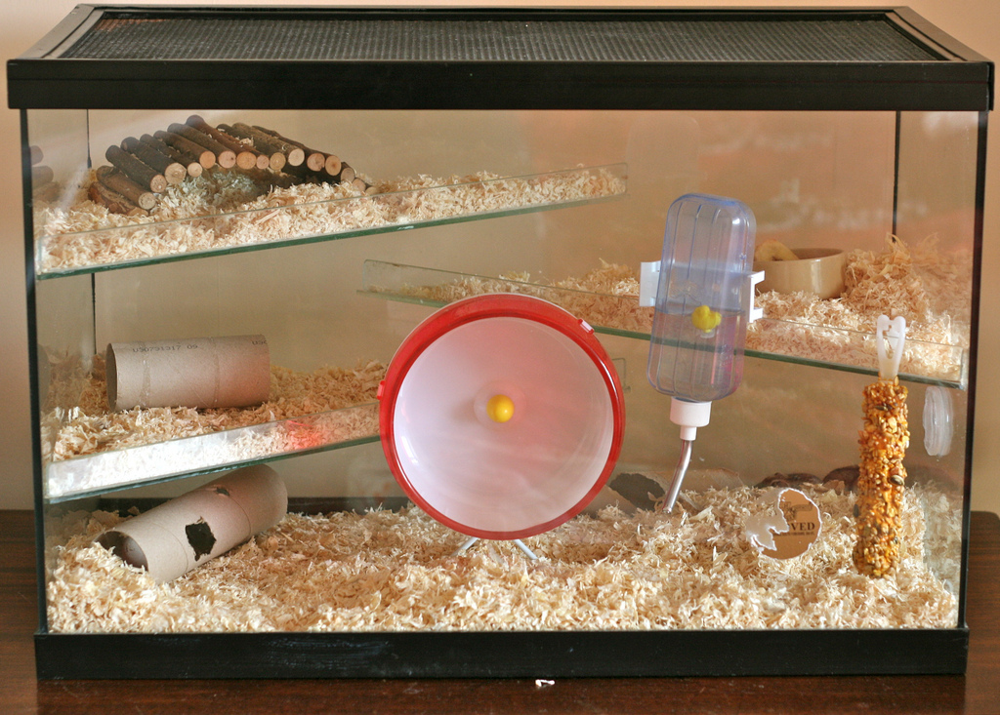
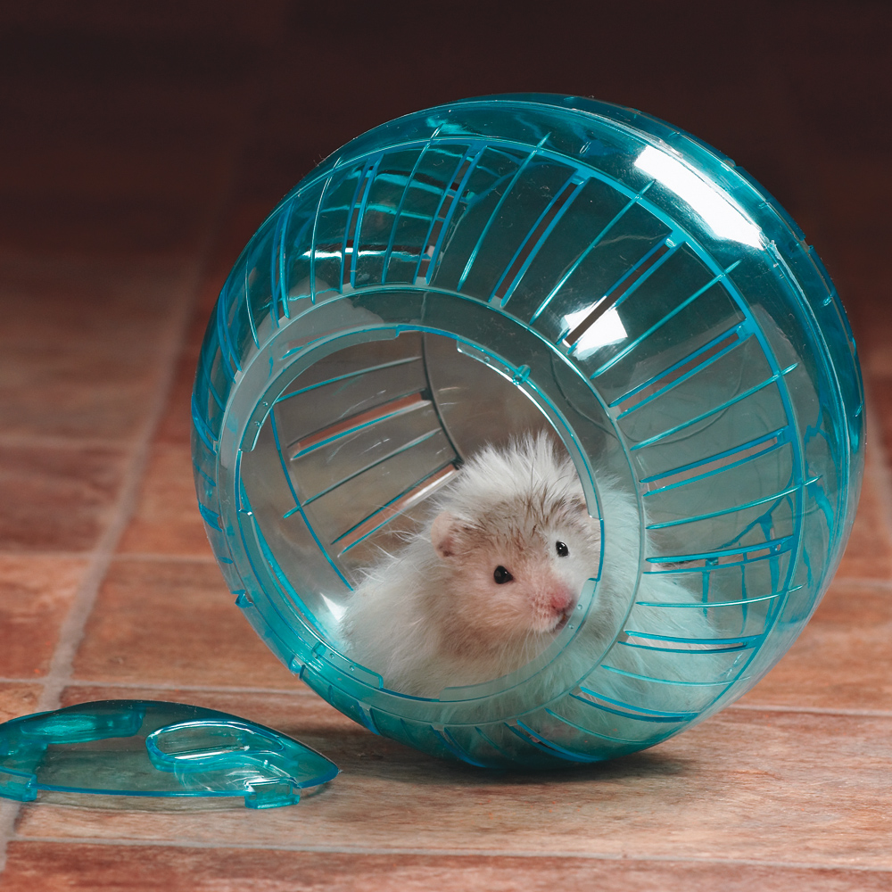

Housing
Hamsters acclimate well to average household temperatures, not to exceed 80°F; be cautious of extreme temperature changes. The habitat should never be in direct sunlight or in a drafty area.
Habitat should be plastic, metal or glass, escape proof with solid bottom; there should be plenty of room for the Hamster to exercise and play. It is best to provide the largest habitat possible.
1-2 inches of bedding should be placed in the habitat; proper bedding includes high quality paper bedding, crumbled paper bedding, or hardwood shavings. Cedar-based products are not recommended.
Necessities
In addition to your hamster's solitary nature, your pet is nocturnal. Perhaps because of cooler night temperatures in the natural environment, your pet wakes, eats and plays in the early evening and well into the night. He is comfortable hoarding, burrowing, and exploring in the dark. During the day your pet curls into a ball for sleep. In the wild (or in your house, should the temperature drop), he will hibernate at temperatures below 50-60 degrees F (10 degrees C).
 A long-haired Syrian hamster in an exercise ball.A water bottle or water dish. You will have less mess to clean up if you use a stoppered bottle in place of a water dish.
A food dish.
Hide and sleeping areas for your hamster.
Toys such as an exercise wheel, ramps, and tunnels so your pet hamster can exercise and explore.